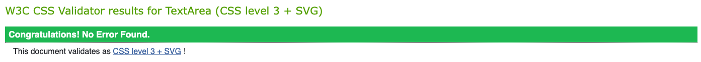
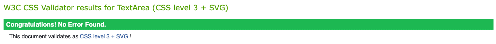

Accessibility
Coding choices
Before we started out with the coding part, we check through the checklist that was on The A11Y Project. Opens a new window We used tools such as contrast checker, Opens a new window text editor Opens a new window and colour wheel Opens a new window to check that it passed WCAG level AA. For example, we selected colours that are safe for people that have colour blindness.
The term average user is vague, so we decided to practice as much accessibility as possible. We're inexperience when it comes to make a website, so there will be some faults that we didn't see.
We tried to be wary with the use of semantic and non-semantic elements. Our styling sheets usually followed the pattern of our HTML files. There is always an exception.
Our website has two colour scheme, dark and light. It works from small screen devices to large screen devices.
Testing for accessibility
Before we tested our website, we put our codes through HTML validation Opens a new window and CSS validation. Opens a new window The results are as followed:
 

We used WAVE Opens a new window to test for accessibility. The results are as followed:
To be honest with you, when we first tested our website there were some errors. But we fixed and solved it by google for answers. The final results are as we expected.